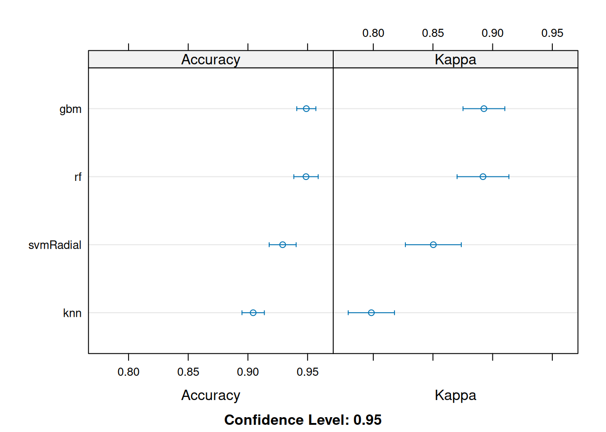
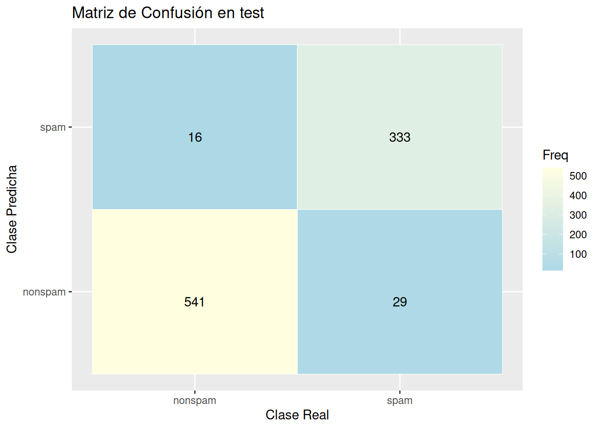
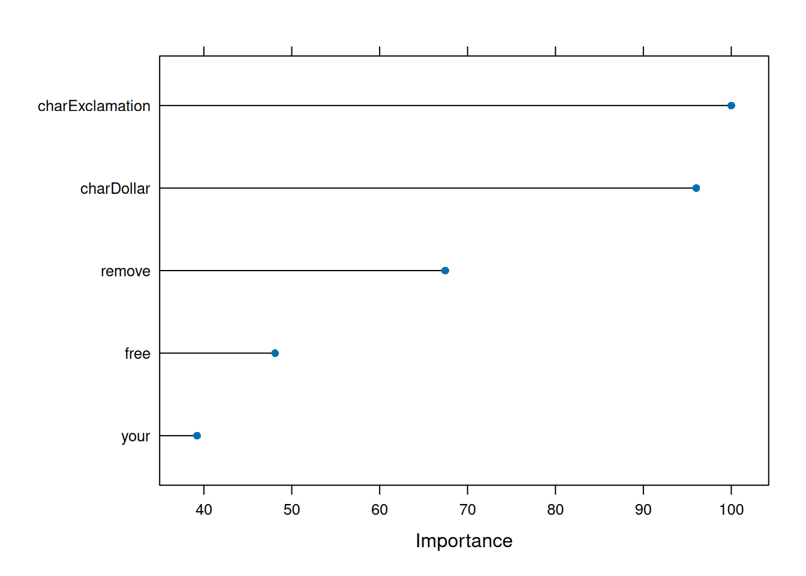

library(caret)
library(kernlab)Dataset Spam
Analisis del dataset de spam
El dataset de spam es una recopilado en los laboratorios de Hewlett-Packard, clasifica 4601 correos electrónicos como spam o no spam. Además de esta etiqueta de clase, existen 57 variables que indican la frecuencia de ciertas palabras y caracteres en el correo electrónico.
El dataset contiene 2788 correos “no spam” y 1813 como “spam”. Mas información
Cargar las librerias y el dataset
Cargar el dataset dentro de la variable datos
data(spam)
datos = spamInformación del dataset
dim(datos) [1] 4601 58El dataset tiene 4601 observaciones y 58 variables
str(datos) 'data.frame': 4601 obs. of 58 variables:
$ make : num 0 0.21 0.06 0 0 0 0 0 0.15 0.06 ...
$ address : num 0.64 0.28 0 0 0 0 0 0 0 0.12 ...
$ all : num 0.64 0.5 0.71 0 0 0 0 0 0.46 0.77 ...
$ num3d : num 0 0 0 0 0 0 0 0 0 0 ...
$ our : num 0.32 0.14 1.23 0.63 0.63 1.85 1.92 1.88 0.61 0.19 ...
$ over : num 0 0.28 0.19 0 0 0 0 0 0 0.32 ...
$ remove : num 0 0.21 0.19 0.31 0.31 0 0 0 0.3 0.38 ...
$ internet : num 0 0.07 0.12 0.63 0.63 1.85 0 1.88 0 0 ...
$ order : num 0 0 0.64 0.31 0.31 0 0 0 0.92 0.06 ...
$ mail : num 0 0.94 0.25 0.63 0.63 0 0.64 0 0.76 0 ...
$ receive : num 0 0.21 0.38 0.31 0.31 0 0.96 0 0.76 0 ...
$ will : num 0.64 0.79 0.45 0.31 0.31 0 1.28 0 0.92 0.64 ...
$ people : num 0 0.65 0.12 0.31 0.31 0 0 0 0 0.25 ...
$ report : num 0 0.21 0 0 0 0 0 0 0 0 ...
$ addresses : num 0 0.14 1.75 0 0 0 0 0 0 0.12 ...
$ free : num 0.32 0.14 0.06 0.31 0.31 0 0.96 0 0 0 ...
$ business : num 0 0.07 0.06 0 0 0 0 0 0 0 ...
$ email : num 1.29 0.28 1.03 0 0 0 0.32 0 0.15 0.12 ...
$ you : num 1.93 3.47 1.36 3.18 3.18 0 3.85 0 1.23 1.67 ...
$ credit : num 0 0 0.32 0 0 0 0 0 3.53 0.06 ...
$ your : num 0.96 1.59 0.51 0.31 0.31 0 0.64 0 2 0.71 ...
$ font : num 0 0 0 0 0 0 0 0 0 0 ...
$ num000 : num 0 0.43 1.16 0 0 0 0 0 0 0.19 ...
$ money : num 0 0.43 0.06 0 0 0 0 0 0.15 0 ...
$ hp : num 0 0 0 0 0 0 0 0 0 0 ...
$ hpl : num 0 0 0 0 0 0 0 0 0 0 ...
$ george : num 0 0 0 0 0 0 0 0 0 0 ...
$ num650 : num 0 0 0 0 0 0 0 0 0 0 ...
$ lab : num 0 0 0 0 0 0 0 0 0 0 ...
$ labs : num 0 0 0 0 0 0 0 0 0 0 ...
$ telnet : num 0 0 0 0 0 0 0 0 0 0 ...
$ num857 : num 0 0 0 0 0 0 0 0 0 0 ...
$ data : num 0 0 0 0 0 0 0 0 0.15 0 ...
$ num415 : num 0 0 0 0 0 0 0 0 0 0 ...
$ num85 : num 0 0 0 0 0 0 0 0 0 0 ...
$ technology : num 0 0 0 0 0 0 0 0 0 0 ...
$ num1999 : num 0 0.07 0 0 0 0 0 0 0 0 ...
$ parts : num 0 0 0 0 0 0 0 0 0 0 ...
$ pm : num 0 0 0 0 0 0 0 0 0 0 ...
$ direct : num 0 0 0.06 0 0 0 0 0 0 0 ...
$ cs : num 0 0 0 0 0 0 0 0 0 0 ...
$ meeting : num 0 0 0 0 0 0 0 0 0 0 ...
$ original : num 0 0 0.12 0 0 0 0 0 0.3 0 ...
$ project : num 0 0 0 0 0 0 0 0 0 0.06 ...
$ re : num 0 0 0.06 0 0 0 0 0 0 0 ...
$ edu : num 0 0 0.06 0 0 0 0 0 0 0 ...
$ table : num 0 0 0 0 0 0 0 0 0 0 ...
$ conference : num 0 0 0 0 0 0 0 0 0 0 ...
$ charSemicolon : num 0 0 0.01 0 0 0 0 0 0 0.04 ...
$ charRoundbracket : num 0 0.132 0.143 0.137 0.135 0.223 0.054 0.206 0.271 0.03 ...
$ charSquarebracket: num 0 0 0 0 0 0 0 0 0 0 ...
$ charExclamation : num 0.778 0.372 0.276 0.137 0.135 0 0.164 0 0.181 0.244 ...
$ charDollar : num 0 0.18 0.184 0 0 0 0.054 0 0.203 0.081 ...
$ charHash : num 0 0.048 0.01 0 0 0 0 0 0.022 0 ...
$ capitalAve : num 3.76 5.11 9.82 3.54 3.54 ...
$ capitalLong : num 61 101 485 40 40 15 4 11 445 43 ...
$ capitalTotal : num 278 1028 2259 191 191 ...
$ type : Factor w/ 2 levels "nonspam","spam": 2 2 2 2 2 2 2 2 2 2 ...Se observa que todos las variables son numéricas, excepto type que es categórica, es la variable a analizar
colSums(is.na(datos)) make address all num3d
0 0 0 0
our over remove internet
0 0 0 0
order mail receive will
0 0 0 0
people report addresses free
0 0 0 0
business email you credit
0 0 0 0
your font num000 money
0 0 0 0
hp hpl george num650
0 0 0 0
lab labs telnet num857
0 0 0 0
data num415 num85 technology
0 0 0 0
num1999 parts pm direct
0 0 0 0
cs meeting original project
0 0 0 0
re edu table conference
0 0 0 0
charSemicolon charRoundbracket charSquarebracket charExclamation
0 0 0 0
charDollar charHash capitalAve capitalLong
0 0 0 0
capitalTotal type
0 0 El dataset no contiene valores faltantes
table(datos$type)
nonspam spam
2788 1813 Existe 2788 correos “no spam” y 1813 con spam
Modelado
set.seed(123)
train <- createDataPartition(datos$type, p = 0.8, list = FALSE)
trainData <- datos[train, ]
testData <- datos[-train, ] Se divide el dataset en 80% train y 20% test
preProcValues <- preProcess(trainData[,1:57], method = c("center", "scale"))
trainTransformed <- predict(preProcValues, trainData[, 1:57])
testTransformed <- predict(preProcValues, testData[, 1:57]) Se realiza un escalado y centrado de las variables
trainTransformed$type <- trainData$type
testTransformed$type <- testData$type Reconstruimos el datasets con la variable objetivo
set.seed(123)
ctrl <- trainControl(method = "cv", number = 5) Realizamos un cross-validation para evitar el sobreajuste
set.seed(123)
methods <- c("rf", "svmRadial", "knn", "gbm") Los modelos que se van a entrenar son: random forest, svmRadial, k-Nearest Neighbour y Generalized Boosted Models
models <- lapply(methods, function(m) {
train(type ~ .,
data = trainTransformed,
method = m,
trControl = ctrl,
tuneLength = 5)
}) Iter TrainDeviance ValidDeviance StepSize Improve
1 1.2790 -nan 0.1000 0.0294
2 1.2238 -nan 0.1000 0.0274
3 1.1765 -nan 0.1000 0.0222
4 1.1342 -nan 0.1000 0.0206
5 1.0970 -nan 0.1000 0.0174
6 1.0630 -nan 0.1000 0.0169
7 1.0297 -nan 0.1000 0.0163
8 1.0014 -nan 0.1000 0.0140
9 0.9745 -nan 0.1000 0.0119
10 0.9489 -nan 0.1000 0.0114
20 0.7761 -nan 0.1000 0.0071
40 0.5933 -nan 0.1000 0.0025
60 0.5080 -nan 0.1000 0.0009
80 0.4534 -nan 0.1000 0.0004
100 0.4184 -nan 0.1000 0.0011
120 0.3923 -nan 0.1000 0.0000
140 0.3734 -nan 0.1000 0.0003
160 0.3601 -nan 0.1000 0.0000
180 0.3491 -nan 0.1000 -0.0001
200 0.3377 -nan 0.1000 0.0000
220 0.3298 -nan 0.1000 0.0001
240 0.3215 -nan 0.1000 -0.0002
250 0.3196 -nan 0.1000 -0.0001
Iter TrainDeviance ValidDeviance StepSize Improve
1 1.2619 -nan 0.1000 0.0373
2 1.1822 -nan 0.1000 0.0387
3 1.1239 -nan 0.1000 0.0289
4 1.0637 -nan 0.1000 0.0296
5 1.0167 -nan 0.1000 0.0226
6 0.9745 -nan 0.1000 0.0204
7 0.9326 -nan 0.1000 0.0202
8 0.8934 -nan 0.1000 0.0181
9 0.8631 -nan 0.1000 0.0140
10 0.8368 -nan 0.1000 0.0123
20 0.6315 -nan 0.1000 0.0064
40 0.4537 -nan 0.1000 0.0024
60 0.3860 -nan 0.1000 -0.0001
80 0.3491 -nan 0.1000 0.0004
100 0.3251 -nan 0.1000 -0.0002
120 0.3075 -nan 0.1000 -0.0003
140 0.2925 -nan 0.1000 -0.0000
160 0.2792 -nan 0.1000 -0.0002
180 0.2669 -nan 0.1000 -0.0003
200 0.2587 -nan 0.1000 -0.0001
220 0.2521 -nan 0.1000 -0.0003
240 0.2445 -nan 0.1000 0.0000
250 0.2414 -nan 0.1000 -0.0003
Iter TrainDeviance ValidDeviance StepSize Improve
1 1.2380 -nan 0.1000 0.0512
2 1.1593 -nan 0.1000 0.0381
3 1.0842 -nan 0.1000 0.0359
4 1.0260 -nan 0.1000 0.0277
5 0.9706 -nan 0.1000 0.0280
6 0.9253 -nan 0.1000 0.0212
7 0.8840 -nan 0.1000 0.0191
8 0.8463 -nan 0.1000 0.0187
9 0.8133 -nan 0.1000 0.0156
10 0.7818 -nan 0.1000 0.0155
20 0.5737 -nan 0.1000 0.0071
40 0.4007 -nan 0.1000 0.0016
60 0.3349 -nan 0.1000 0.0005
80 0.3019 -nan 0.1000 0.0000
100 0.2827 -nan 0.1000 -0.0003
120 0.2660 -nan 0.1000 -0.0005
140 0.2504 -nan 0.1000 -0.0001
160 0.2385 -nan 0.1000 -0.0001
180 0.2277 -nan 0.1000 0.0002
200 0.2200 -nan 0.1000 -0.0004
220 0.2102 -nan 0.1000 -0.0004
240 0.2024 -nan 0.1000 -0.0001
250 0.1985 -nan 0.1000 -0.0003
Iter TrainDeviance ValidDeviance StepSize Improve
1 1.2384 -nan 0.1000 0.0501
2 1.1431 -nan 0.1000 0.0459
3 1.0677 -nan 0.1000 0.0382
4 1.0049 -nan 0.1000 0.0312
5 0.9507 -nan 0.1000 0.0258
6 0.8981 -nan 0.1000 0.0265
7 0.8506 -nan 0.1000 0.0222
8 0.8133 -nan 0.1000 0.0176
9 0.7768 -nan 0.1000 0.0175
10 0.7474 -nan 0.1000 0.0132
20 0.5313 -nan 0.1000 0.0094
40 0.3736 -nan 0.1000 0.0010
60 0.3126 -nan 0.1000 0.0003
80 0.2768 -nan 0.1000 0.0005
100 0.2535 -nan 0.1000 -0.0002
120 0.2382 -nan 0.1000 -0.0002
140 0.2240 -nan 0.1000 -0.0003
160 0.2094 -nan 0.1000 -0.0003
180 0.1960 -nan 0.1000 -0.0001
200 0.1868 -nan 0.1000 -0.0002
220 0.1774 -nan 0.1000 -0.0001
240 0.1665 -nan 0.1000 -0.0002
250 0.1614 -nan 0.1000 -0.0002
Iter TrainDeviance ValidDeviance StepSize Improve
1 1.2328 -nan 0.1000 0.0514
2 1.1327 -nan 0.1000 0.0501
3 1.0519 -nan 0.1000 0.0388
4 0.9835 -nan 0.1000 0.0317
5 0.9245 -nan 0.1000 0.0275
6 0.8708 -nan 0.1000 0.0251
7 0.8270 -nan 0.1000 0.0209
8 0.7870 -nan 0.1000 0.0194
9 0.7499 -nan 0.1000 0.0180
10 0.7175 -nan 0.1000 0.0143
20 0.5060 -nan 0.1000 0.0093
40 0.3435 -nan 0.1000 0.0012
60 0.2822 -nan 0.1000 0.0001
80 0.2542 -nan 0.1000 0.0000
100 0.2328 -nan 0.1000 -0.0001
120 0.2132 -nan 0.1000 -0.0004
140 0.1963 -nan 0.1000 0.0001
160 0.1818 -nan 0.1000 -0.0001
180 0.1714 -nan 0.1000 -0.0003
200 0.1590 -nan 0.1000 -0.0003
220 0.1496 -nan 0.1000 -0.0003
240 0.1415 -nan 0.1000 -0.0002
250 0.1375 -nan 0.1000 -0.0002
Iter TrainDeviance ValidDeviance StepSize Improve
1 1.2797 -nan 0.1000 0.0295
2 1.2225 -nan 0.1000 0.0289
3 1.1766 -nan 0.1000 0.0211
4 1.1304 -nan 0.1000 0.0214
5 1.0944 -nan 0.1000 0.0174
6 1.0598 -nan 0.1000 0.0167
7 1.0287 -nan 0.1000 0.0155
8 1.0014 -nan 0.1000 0.0133
9 0.9742 -nan 0.1000 0.0135
10 0.9494 -nan 0.1000 0.0119
20 0.7735 -nan 0.1000 0.0069
40 0.5909 -nan 0.1000 0.0024
60 0.4997 -nan 0.1000 0.0010
80 0.4440 -nan 0.1000 0.0006
100 0.4043 -nan 0.1000 0.0004
120 0.3767 -nan 0.1000 -0.0002
140 0.3564 -nan 0.1000 0.0005
160 0.3423 -nan 0.1000 -0.0004
180 0.3290 -nan 0.1000 0.0005
200 0.3209 -nan 0.1000 -0.0004
220 0.3129 -nan 0.1000 -0.0000
240 0.3046 -nan 0.1000 0.0000
250 0.3015 -nan 0.1000 -0.0003
Iter TrainDeviance ValidDeviance StepSize Improve
1 1.2501 -nan 0.1000 0.0452
2 1.1788 -nan 0.1000 0.0338
3 1.1200 -nan 0.1000 0.0281
4 1.0632 -nan 0.1000 0.0285
5 1.0169 -nan 0.1000 0.0210
6 0.9738 -nan 0.1000 0.0209
7 0.9321 -nan 0.1000 0.0204
8 0.8985 -nan 0.1000 0.0167
9 0.8665 -nan 0.1000 0.0151
10 0.8363 -nan 0.1000 0.0138
20 0.6189 -nan 0.1000 0.0088
40 0.4503 -nan 0.1000 0.0026
60 0.3736 -nan 0.1000 0.0009
80 0.3315 -nan 0.1000 0.0003
100 0.3062 -nan 0.1000 0.0001
120 0.2894 -nan 0.1000 -0.0003
140 0.2771 -nan 0.1000 -0.0002
160 0.2624 -nan 0.1000 -0.0001
180 0.2539 -nan 0.1000 -0.0002
200 0.2454 -nan 0.1000 0.0000
220 0.2388 -nan 0.1000 -0.0001
240 0.2302 -nan 0.1000 -0.0002
250 0.2266 -nan 0.1000 -0.0001
Iter TrainDeviance ValidDeviance StepSize Improve
1 1.2464 -nan 0.1000 0.0489
2 1.1576 -nan 0.1000 0.0435
3 1.0883 -nan 0.1000 0.0338
4 1.0233 -nan 0.1000 0.0325
5 0.9700 -nan 0.1000 0.0258
6 0.9215 -nan 0.1000 0.0235
7 0.8812 -nan 0.1000 0.0190
8 0.8430 -nan 0.1000 0.0169
9 0.8074 -nan 0.1000 0.0174
10 0.7761 -nan 0.1000 0.0155
20 0.5647 -nan 0.1000 0.0106
40 0.3889 -nan 0.1000 0.0014
60 0.3281 -nan 0.1000 0.0002
80 0.2924 -nan 0.1000 0.0002
100 0.2679 -nan 0.1000 -0.0004
120 0.2501 -nan 0.1000 -0.0000
140 0.2368 -nan 0.1000 -0.0002
160 0.2256 -nan 0.1000 -0.0002
180 0.2155 -nan 0.1000 -0.0003
200 0.2055 -nan 0.1000 -0.0001
220 0.1963 -nan 0.1000 -0.0001
240 0.1883 -nan 0.1000 0.0001
250 0.1851 -nan 0.1000 -0.0004
Iter TrainDeviance ValidDeviance StepSize Improve
1 1.2365 -nan 0.1000 0.0500
2 1.1373 -nan 0.1000 0.0471
3 1.0613 -nan 0.1000 0.0357
4 0.9900 -nan 0.1000 0.0352
5 0.9319 -nan 0.1000 0.0283
6 0.8845 -nan 0.1000 0.0227
7 0.8417 -nan 0.1000 0.0204
8 0.8016 -nan 0.1000 0.0197
9 0.7677 -nan 0.1000 0.0159
10 0.7330 -nan 0.1000 0.0170
20 0.5216 -nan 0.1000 0.0079
40 0.3543 -nan 0.1000 0.0007
60 0.2898 -nan 0.1000 0.0005
80 0.2578 -nan 0.1000 -0.0001
100 0.2383 -nan 0.1000 -0.0001
120 0.2225 -nan 0.1000 -0.0004
140 0.2073 -nan 0.1000 -0.0003
160 0.1933 -nan 0.1000 -0.0004
180 0.1830 -nan 0.1000 -0.0004
200 0.1726 -nan 0.1000 -0.0001
220 0.1632 -nan 0.1000 -0.0002
240 0.1527 -nan 0.1000 -0.0001
250 0.1482 -nan 0.1000 -0.0003
Iter TrainDeviance ValidDeviance StepSize Improve
1 1.2223 -nan 0.1000 0.0585
2 1.1319 -nan 0.1000 0.0435
3 1.0483 -nan 0.1000 0.0398
4 0.9765 -nan 0.1000 0.0343
5 0.9196 -nan 0.1000 0.0265
6 0.8667 -nan 0.1000 0.0253
7 0.8171 -nan 0.1000 0.0220
8 0.7766 -nan 0.1000 0.0190
9 0.7436 -nan 0.1000 0.0158
10 0.7119 -nan 0.1000 0.0143
20 0.4941 -nan 0.1000 0.0069
40 0.3272 -nan 0.1000 0.0027
60 0.2708 -nan 0.1000 -0.0003
80 0.2377 -nan 0.1000 -0.0002
100 0.2164 -nan 0.1000 -0.0003
120 0.1983 -nan 0.1000 -0.0002
140 0.1847 -nan 0.1000 -0.0003
160 0.1713 -nan 0.1000 -0.0003
180 0.1589 -nan 0.1000 -0.0005
200 0.1473 -nan 0.1000 -0.0002
220 0.1380 -nan 0.1000 -0.0001
240 0.1303 -nan 0.1000 -0.0004
250 0.1267 -nan 0.1000 -0.0001
Iter TrainDeviance ValidDeviance StepSize Improve
1 1.2823 -nan 0.1000 0.0293
2 1.2254 -nan 0.1000 0.0285
3 1.1785 -nan 0.1000 0.0229
4 1.1353 -nan 0.1000 0.0201
5 1.0995 -nan 0.1000 0.0162
6 1.0641 -nan 0.1000 0.0175
7 1.0315 -nan 0.1000 0.0151
8 1.0030 -nan 0.1000 0.0134
9 0.9767 -nan 0.1000 0.0122
10 0.9535 -nan 0.1000 0.0104
20 0.7759 -nan 0.1000 0.0061
40 0.5977 -nan 0.1000 0.0026
60 0.5040 -nan 0.1000 0.0022
80 0.4512 -nan 0.1000 0.0004
100 0.4146 -nan 0.1000 0.0002
120 0.3874 -nan 0.1000 0.0003
140 0.3655 -nan 0.1000 -0.0001
160 0.3498 -nan 0.1000 0.0006
180 0.3364 -nan 0.1000 0.0001
200 0.3254 -nan 0.1000 0.0000
220 0.3153 -nan 0.1000 -0.0001
240 0.3084 -nan 0.1000 0.0001
250 0.3037 -nan 0.1000 -0.0000
Iter TrainDeviance ValidDeviance StepSize Improve
1 1.2640 -nan 0.1000 0.0374
2 1.1837 -nan 0.1000 0.0396
3 1.1173 -nan 0.1000 0.0322
4 1.0651 -nan 0.1000 0.0261
5 1.0202 -nan 0.1000 0.0215
6 0.9759 -nan 0.1000 0.0211
7 0.9385 -nan 0.1000 0.0170
8 0.9014 -nan 0.1000 0.0184
9 0.8709 -nan 0.1000 0.0151
10 0.8397 -nan 0.1000 0.0148
20 0.6309 -nan 0.1000 0.0063
40 0.4512 -nan 0.1000 0.0018
60 0.3824 -nan 0.1000 0.0003
80 0.3426 -nan 0.1000 0.0003
100 0.3169 -nan 0.1000 0.0004
120 0.2964 -nan 0.1000 0.0000
140 0.2801 -nan 0.1000 -0.0005
160 0.2706 -nan 0.1000 -0.0001
180 0.2588 -nan 0.1000 -0.0001
200 0.2502 -nan 0.1000 -0.0000
220 0.2441 -nan 0.1000 -0.0001
240 0.2370 -nan 0.1000 -0.0002
250 0.2340 -nan 0.1000 -0.0003
Iter TrainDeviance ValidDeviance StepSize Improve
1 1.2365 -nan 0.1000 0.0505
2 1.1621 -nan 0.1000 0.0365
3 1.0878 -nan 0.1000 0.0370
4 1.0272 -nan 0.1000 0.0288
5 0.9764 -nan 0.1000 0.0241
6 0.9267 -nan 0.1000 0.0246
7 0.8868 -nan 0.1000 0.0197
8 0.8455 -nan 0.1000 0.0196
9 0.8094 -nan 0.1000 0.0168
10 0.7806 -nan 0.1000 0.0135
20 0.5647 -nan 0.1000 0.0061
40 0.3954 -nan 0.1000 0.0022
60 0.3348 -nan 0.1000 0.0000
80 0.3003 -nan 0.1000 0.0000
100 0.2761 -nan 0.1000 -0.0001
120 0.2599 -nan 0.1000 -0.0003
140 0.2439 -nan 0.1000 -0.0004
160 0.2309 -nan 0.1000 -0.0001
180 0.2208 -nan 0.1000 -0.0001
200 0.2105 -nan 0.1000 -0.0000
220 0.2012 -nan 0.1000 -0.0002
240 0.1949 -nan 0.1000 -0.0002
250 0.1914 -nan 0.1000 -0.0002
Iter TrainDeviance ValidDeviance StepSize Improve
1 1.2327 -nan 0.1000 0.0541
2 1.1402 -nan 0.1000 0.0469
3 1.0660 -nan 0.1000 0.0358
4 1.0016 -nan 0.1000 0.0304
5 0.9455 -nan 0.1000 0.0271
6 0.8908 -nan 0.1000 0.0261
7 0.8468 -nan 0.1000 0.0204
8 0.8073 -nan 0.1000 0.0183
9 0.7731 -nan 0.1000 0.0169
10 0.7402 -nan 0.1000 0.0147
20 0.5251 -nan 0.1000 0.0061
40 0.3630 -nan 0.1000 0.0021
60 0.3027 -nan 0.1000 0.0003
80 0.2688 -nan 0.1000 -0.0001
100 0.2484 -nan 0.1000 -0.0001
120 0.2310 -nan 0.1000 0.0001
140 0.2153 -nan 0.1000 -0.0003
160 0.2031 -nan 0.1000 -0.0002
180 0.1923 -nan 0.1000 -0.0002
200 0.1822 -nan 0.1000 -0.0003
220 0.1719 -nan 0.1000 -0.0003
240 0.1630 -nan 0.1000 -0.0001
250 0.1595 -nan 0.1000 -0.0002
Iter TrainDeviance ValidDeviance StepSize Improve
1 1.2219 -nan 0.1000 0.0590
2 1.1333 -nan 0.1000 0.0436
3 1.0553 -nan 0.1000 0.0376
4 0.9928 -nan 0.1000 0.0306
5 0.9299 -nan 0.1000 0.0305
6 0.8791 -nan 0.1000 0.0232
7 0.8308 -nan 0.1000 0.0231
8 0.7891 -nan 0.1000 0.0193
9 0.7509 -nan 0.1000 0.0180
10 0.7183 -nan 0.1000 0.0155
20 0.4999 -nan 0.1000 0.0099
40 0.3382 -nan 0.1000 0.0014
60 0.2798 -nan 0.1000 0.0002
80 0.2470 -nan 0.1000 0.0001
100 0.2241 -nan 0.1000 -0.0002
120 0.2087 -nan 0.1000 -0.0001
140 0.1931 -nan 0.1000 -0.0003
160 0.1781 -nan 0.1000 -0.0004
180 0.1675 -nan 0.1000 -0.0005
200 0.1585 -nan 0.1000 -0.0003
220 0.1491 -nan 0.1000 -0.0003
240 0.1405 -nan 0.1000 -0.0004
250 0.1357 -nan 0.1000 -0.0003
Iter TrainDeviance ValidDeviance StepSize Improve
1 1.2724 -nan 0.1000 0.0344
2 1.2136 -nan 0.1000 0.0276
3 1.1671 -nan 0.1000 0.0233
4 1.1266 -nan 0.1000 0.0194
5 1.0861 -nan 0.1000 0.0199
6 1.0521 -nan 0.1000 0.0170
7 1.0206 -nan 0.1000 0.0154
8 0.9915 -nan 0.1000 0.0143
9 0.9646 -nan 0.1000 0.0133
10 0.9399 -nan 0.1000 0.0108
20 0.7629 -nan 0.1000 0.0067
40 0.5878 -nan 0.1000 0.0023
60 0.4985 -nan 0.1000 0.0009
80 0.4421 -nan 0.1000 0.0008
100 0.4063 -nan 0.1000 0.0002
120 0.3809 -nan 0.1000 -0.0000
140 0.3617 -nan 0.1000 0.0001
160 0.3467 -nan 0.1000 0.0001
180 0.3348 -nan 0.1000 -0.0001
200 0.3247 -nan 0.1000 -0.0001
220 0.3156 -nan 0.1000 0.0001
240 0.3056 -nan 0.1000 0.0001
250 0.3033 -nan 0.1000 -0.0001
Iter TrainDeviance ValidDeviance StepSize Improve
1 1.2565 -nan 0.1000 0.0390
2 1.1715 -nan 0.1000 0.0413
3 1.1032 -nan 0.1000 0.0329
4 1.0484 -nan 0.1000 0.0262
5 0.9997 -nan 0.1000 0.0235
6 0.9585 -nan 0.1000 0.0195
7 0.9175 -nan 0.1000 0.0197
8 0.8821 -nan 0.1000 0.0170
9 0.8484 -nan 0.1000 0.0164
10 0.8175 -nan 0.1000 0.0140
20 0.6167 -nan 0.1000 0.0064
40 0.4457 -nan 0.1000 0.0019
60 0.3755 -nan 0.1000 0.0008
80 0.3369 -nan 0.1000 0.0005
100 0.3141 -nan 0.1000 0.0000
120 0.2976 -nan 0.1000 0.0003
140 0.2825 -nan 0.1000 0.0001
160 0.2708 -nan 0.1000 -0.0001
180 0.2624 -nan 0.1000 -0.0001
200 0.2536 -nan 0.1000 -0.0001
220 0.2449 -nan 0.1000 -0.0002
240 0.2387 -nan 0.1000 -0.0003
250 0.2359 -nan 0.1000 -0.0002
Iter TrainDeviance ValidDeviance StepSize Improve
1 1.2287 -nan 0.1000 0.0556
2 1.1472 -nan 0.1000 0.0410
3 1.0719 -nan 0.1000 0.0371
4 1.0104 -nan 0.1000 0.0316
5 0.9589 -nan 0.1000 0.0252
6 0.9111 -nan 0.1000 0.0230
7 0.8693 -nan 0.1000 0.0208
8 0.8348 -nan 0.1000 0.0169
9 0.8005 -nan 0.1000 0.0168
10 0.7682 -nan 0.1000 0.0148
20 0.5600 -nan 0.1000 0.0102
40 0.3880 -nan 0.1000 0.0012
60 0.3237 -nan 0.1000 0.0009
80 0.2911 -nan 0.1000 -0.0001
100 0.2675 -nan 0.1000 0.0002
120 0.2517 -nan 0.1000 -0.0009
140 0.2388 -nan 0.1000 -0.0002
160 0.2281 -nan 0.1000 0.0003
180 0.2187 -nan 0.1000 -0.0002
200 0.2101 -nan 0.1000 -0.0003
220 0.1992 -nan 0.1000 -0.0002
240 0.1920 -nan 0.1000 -0.0001
250 0.1881 -nan 0.1000 -0.0001
Iter TrainDeviance ValidDeviance StepSize Improve
1 1.2345 -nan 0.1000 0.0514
2 1.1311 -nan 0.1000 0.0499
3 1.0566 -nan 0.1000 0.0356
4 0.9894 -nan 0.1000 0.0335
5 0.9333 -nan 0.1000 0.0275
6 0.8789 -nan 0.1000 0.0261
7 0.8358 -nan 0.1000 0.0206
8 0.7925 -nan 0.1000 0.0207
9 0.7578 -nan 0.1000 0.0159
10 0.7277 -nan 0.1000 0.0136
20 0.5102 -nan 0.1000 0.0096
40 0.3532 -nan 0.1000 0.0013
60 0.2899 -nan 0.1000 -0.0002
80 0.2584 -nan 0.1000 0.0006
100 0.2379 -nan 0.1000 -0.0006
120 0.2202 -nan 0.1000 -0.0000
140 0.2068 -nan 0.1000 -0.0003
160 0.1950 -nan 0.1000 -0.0002
180 0.1839 -nan 0.1000 -0.0002
200 0.1733 -nan 0.1000 -0.0003
220 0.1654 -nan 0.1000 -0.0001
240 0.1572 -nan 0.1000 -0.0001
250 0.1535 -nan 0.1000 -0.0002
Iter TrainDeviance ValidDeviance StepSize Improve
1 1.2252 -nan 0.1000 0.0575
2 1.1299 -nan 0.1000 0.0462
3 1.0419 -nan 0.1000 0.0422
4 0.9741 -nan 0.1000 0.0320
5 0.9112 -nan 0.1000 0.0299
6 0.8619 -nan 0.1000 0.0233
7 0.8139 -nan 0.1000 0.0229
8 0.7713 -nan 0.1000 0.0193
9 0.7379 -nan 0.1000 0.0148
10 0.7062 -nan 0.1000 0.0146
20 0.4935 -nan 0.1000 0.0061
40 0.3363 -nan 0.1000 0.0015
60 0.2782 -nan 0.1000 0.0010
80 0.2439 -nan 0.1000 -0.0002
100 0.2212 -nan 0.1000 -0.0009
120 0.2043 -nan 0.1000 -0.0005
140 0.1860 -nan 0.1000 -0.0003
160 0.1746 -nan 0.1000 -0.0002
180 0.1636 -nan 0.1000 -0.0001
200 0.1517 -nan 0.1000 -0.0001
220 0.1405 -nan 0.1000 -0.0003
240 0.1317 -nan 0.1000 -0.0001
250 0.1267 -nan 0.1000 -0.0003
Iter TrainDeviance ValidDeviance StepSize Improve
1 1.2794 -nan 0.1000 0.0303
2 1.2246 -nan 0.1000 0.0277
3 1.1786 -nan 0.1000 0.0222
4 1.1387 -nan 0.1000 0.0198
5 1.0986 -nan 0.1000 0.0198
6 1.0623 -nan 0.1000 0.0157
7 1.0311 -nan 0.1000 0.0148
8 1.0021 -nan 0.1000 0.0129
9 0.9761 -nan 0.1000 0.0128
10 0.9495 -nan 0.1000 0.0126
20 0.7779 -nan 0.1000 0.0048
40 0.5967 -nan 0.1000 0.0022
60 0.5053 -nan 0.1000 0.0016
80 0.4498 -nan 0.1000 0.0010
100 0.4117 -nan 0.1000 0.0006
120 0.3864 -nan 0.1000 0.0009
140 0.3642 -nan 0.1000 0.0002
160 0.3490 -nan 0.1000 0.0004
180 0.3341 -nan 0.1000 -0.0001
200 0.3228 -nan 0.1000 0.0000
220 0.3145 -nan 0.1000 -0.0000
240 0.3061 -nan 0.1000 0.0001
250 0.3027 -nan 0.1000 0.0001
Iter TrainDeviance ValidDeviance StepSize Improve
1 1.2483 -nan 0.1000 0.0444
2 1.1782 -nan 0.1000 0.0347
3 1.1140 -nan 0.1000 0.0309
4 1.0550 -nan 0.1000 0.0275
5 1.0051 -nan 0.1000 0.0235
6 0.9636 -nan 0.1000 0.0198
7 0.9258 -nan 0.1000 0.0182
8 0.8934 -nan 0.1000 0.0150
9 0.8612 -nan 0.1000 0.0150
10 0.8360 -nan 0.1000 0.0124
20 0.6347 -nan 0.1000 0.0065
40 0.4511 -nan 0.1000 0.0018
60 0.3748 -nan 0.1000 0.0007
80 0.3372 -nan 0.1000 0.0006
100 0.3109 -nan 0.1000 0.0001
120 0.2925 -nan 0.1000 0.0002
140 0.2785 -nan 0.1000 -0.0000
160 0.2641 -nan 0.1000 -0.0001
180 0.2536 -nan 0.1000 -0.0002
200 0.2429 -nan 0.1000 -0.0001
220 0.2360 -nan 0.1000 0.0003
240 0.2291 -nan 0.1000 -0.0003
250 0.2262 -nan 0.1000 0.0001
Iter TrainDeviance ValidDeviance StepSize Improve
1 1.2440 -nan 0.1000 0.0458
2 1.1517 -nan 0.1000 0.0443
3 1.0845 -nan 0.1000 0.0319
4 1.0185 -nan 0.1000 0.0309
5 0.9661 -nan 0.1000 0.0255
6 0.9196 -nan 0.1000 0.0219
7 0.8787 -nan 0.1000 0.0198
8 0.8408 -nan 0.1000 0.0182
9 0.8049 -nan 0.1000 0.0172
10 0.7749 -nan 0.1000 0.0138
20 0.5722 -nan 0.1000 0.0069
40 0.3905 -nan 0.1000 0.0019
60 0.3230 -nan 0.1000 0.0008
80 0.2885 -nan 0.1000 0.0004
100 0.2666 -nan 0.1000 -0.0001
120 0.2524 -nan 0.1000 -0.0003
140 0.2368 -nan 0.1000 -0.0003
160 0.2259 -nan 0.1000 -0.0003
180 0.2156 -nan 0.1000 -0.0003
200 0.2042 -nan 0.1000 0.0001
220 0.1955 -nan 0.1000 -0.0001
240 0.1890 -nan 0.1000 0.0001
250 0.1853 -nan 0.1000 -0.0003
Iter TrainDeviance ValidDeviance StepSize Improve
1 1.2278 -nan 0.1000 0.0550
2 1.1409 -nan 0.1000 0.0411
3 1.0695 -nan 0.1000 0.0342
4 0.9953 -nan 0.1000 0.0348
5 0.9360 -nan 0.1000 0.0281
6 0.8845 -nan 0.1000 0.0249
7 0.8413 -nan 0.1000 0.0201
8 0.8019 -nan 0.1000 0.0190
9 0.7671 -nan 0.1000 0.0160
10 0.7350 -nan 0.1000 0.0151
20 0.5253 -nan 0.1000 0.0111
40 0.3603 -nan 0.1000 0.0010
60 0.2945 -nan 0.1000 -0.0003
80 0.2632 -nan 0.1000 -0.0002
100 0.2399 -nan 0.1000 -0.0001
120 0.2223 -nan 0.1000 -0.0002
140 0.2053 -nan 0.1000 -0.0001
160 0.1931 -nan 0.1000 -0.0004
180 0.1822 -nan 0.1000 -0.0004
200 0.1741 -nan 0.1000 -0.0005
220 0.1651 -nan 0.1000 -0.0002
240 0.1579 -nan 0.1000 -0.0001
250 0.1539 -nan 0.1000 -0.0000
Iter TrainDeviance ValidDeviance StepSize Improve
1 1.2303 -nan 0.1000 0.0536
2 1.1335 -nan 0.1000 0.0472
3 1.0480 -nan 0.1000 0.0411
4 0.9790 -nan 0.1000 0.0338
5 0.9200 -nan 0.1000 0.0269
6 0.8683 -nan 0.1000 0.0246
7 0.8241 -nan 0.1000 0.0206
8 0.7813 -nan 0.1000 0.0202
9 0.7480 -nan 0.1000 0.0161
10 0.7178 -nan 0.1000 0.0142
20 0.5055 -nan 0.1000 0.0067
40 0.3404 -nan 0.1000 0.0015
60 0.2760 -nan 0.1000 0.0005
80 0.2444 -nan 0.1000 -0.0005
100 0.2194 -nan 0.1000 -0.0002
120 0.2005 -nan 0.1000 -0.0002
140 0.1843 -nan 0.1000 -0.0006
160 0.1722 -nan 0.1000 -0.0003
180 0.1592 -nan 0.1000 -0.0004
200 0.1477 -nan 0.1000 -0.0000
220 0.1377 -nan 0.1000 -0.0002
240 0.1297 -nan 0.1000 -0.0001
250 0.1265 -nan 0.1000 -0.0002
Iter TrainDeviance ValidDeviance StepSize Improve
1 1.2285 -nan 0.1000 0.0570
2 1.1402 -nan 0.1000 0.0417
3 1.0619 -nan 0.1000 0.0390
4 0.9958 -nan 0.1000 0.0329
5 0.9347 -nan 0.1000 0.0293
6 0.8878 -nan 0.1000 0.0230
7 0.8489 -nan 0.1000 0.0192
8 0.8086 -nan 0.1000 0.0190
9 0.7718 -nan 0.1000 0.0171
10 0.7396 -nan 0.1000 0.0151
20 0.5292 -nan 0.1000 0.0090
40 0.3602 -nan 0.1000 0.0017
60 0.3024 -nan 0.1000 0.0003
80 0.2720 -nan 0.1000 0.0001
100 0.2531 -nan 0.1000 -0.0007
120 0.2375 -nan 0.1000 -0.0004
140 0.2229 -nan 0.1000 0.0004
160 0.2104 -nan 0.1000 -0.0002
180 0.1998 -nan 0.1000 -0.0001
200 0.1893 -nan 0.1000 0.0000
220 0.1819 -nan 0.1000 -0.0002
240 0.1742 -nan 0.1000 -0.0002
250 0.1693 -nan 0.1000 -0.0002Se entreno el modelo, con los 4 modelos mas utilizados
names(models) <- methods
results <- resamples(models)
summary(results)
Call:
summary.resamples(object = results)
Models: rf, svmRadial, knn, gbm
Number of resamples: 5
Accuracy
Min. 1st Qu. Median Mean 3rd Qu. Max. NA's
rf 0.9375000 0.9443691 0.9497965 0.9486701 0.9524457 0.9592391 0
svmRadial 0.9144022 0.9293478 0.9294437 0.9291133 0.9335142 0.9388587 0
knn 0.8968792 0.8994565 0.9009498 0.9044028 0.9103261 0.9144022 0
gbm 0.9402174 0.9442935 0.9511533 0.9489385 0.9538043 0.9552239 0
Kappa
Min. 1st Qu. Median Mean 3rd Qu. Max. NA's
rf 0.8680057 0.8828194 0.8945004 0.8919135 0.9001163 0.9141257 0
svmRadial 0.8199916 0.8503670 0.8509704 0.8503147 0.8594480 0.8707966 0
knn 0.7844764 0.7884335 0.7893354 0.7983825 0.8094581 0.8202094 0
gbm 0.8734367 0.8827096 0.8975409 0.8926848 0.9032627 0.9064739 0Resumen estadístico del Accuracy y Kappa de cada modelo.
dotplot(results) 
Como se observa en la gráfica, tanto el rf como el gbm tienes excelentes resultados.
best_model <- models[["rf"]]
predictions <- predict(best_model, newdata = testTransformed)
cm = confusionMatrix(predictions, testTransformed$type)
cmConfusion Matrix and Statistics
Reference
Prediction nonspam spam
nonspam 541 29
spam 16 333
Accuracy : 0.951
95% CI : (0.935, 0.9641)
No Information Rate : 0.6061
P-Value [Acc > NIR] : < 2e-16
Kappa : 0.8968
Mcnemar's Test P-Value : 0.07364
Sensitivity : 0.9713
Specificity : 0.9199
Pos Pred Value : 0.9491
Neg Pred Value : 0.9542
Prevalence : 0.6061
Detection Rate : 0.5887
Detection Prevalence : 0.6202
Balanced Accuracy : 0.9456
'Positive' Class : nonspam
En los datos de prueba, se obtuvo excelentes resultados, a la hora de clasificar entre spam y no spam. Con un 95% de Accuracy
ggplot( as.data.frame(cm$table), aes(x = Reference, y = Prediction, fill = Freq)) +
geom_tile(color = "white") +
geom_text(aes(label = Freq), vjust = 1.5, color = "black") +
scale_fill_gradient(low = "lightblue", high = "lightyellow") +
labs(title = "Matriz de Confusión en test", x = "Clase Real", y = "Clase Predicha")
Gráfico de la matriz de confusión en el test y se observa que el modelo tiene buen rendimiento al clasificar el correo spam
importance <- varImp(best_model, scale = TRUE)
plot(importance, top = 5) 
El gráfico muestra el top 5 de las variables mas importantes dentro de las 57 que existen.